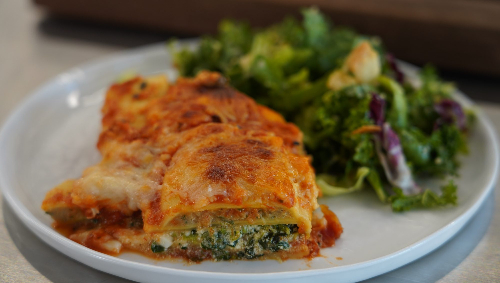

Ravioli Lasagna

A quick and easy take on a classic!
The perfect comfort meal to have in your freezer! This easy make-ahead
lasagna is made with ravioli, which provides a satisfyingly rich and creamy
texture. Serve with salad and garlic bread for an easy weeknight or Sunday dinner.
Ingredients
- cooking spray
- 1 (10 ounce) package frozen chooped spinach, thawed
- 1 (15 ounce) container ricotta cheese
- 1 large egg, lightly beaten
- 1/2 teaspoon kosher salt
- 1/4 teaspoon grounbd black pepper
- 1/4 teaspoon garlic powder
- 3 cups marinara sauce, divided
- 2 (22 ounce) packages frozen cheese ravioli
- 1 (8 ounce) package shredded mozzarella cheese
Steps
- Spray a 9x13-inch baking dish with cooking spray.
- Squeeze thawed spinach between several layers of paper towels to remove as
much excess moisture as possible. Transfer spinach to a medium bowl and stir
in ricotta cheese, egg, salt, pepper, and garlic powder until well combined.
- Pour 1 cup marinara sauce in the bottom of the prepared baking dish. Arrange
1/2 of the ravioli in a single layer over the sauce. Pour 1 cup sauce over the
ravioli, then spread ricotta mixture over the sauce and top with 1/2 cup mozzarella
cheese. Top with remaining ravioli, remaining sauce, and remaining mozzarella.
- Cover with parchment paper and then cover tightly with foil. Freeze for up to
one month.
- When ready to cook, preheat the oven to 350 degrees F (175 degrees C).
- Place frozen covered lasagna in the preheated oven and bake for 1 1/2 hours. Uncover
and bake until golden and bubbly, about 20 more minutes. Let stand for 10 minutes
before serving.
Recipe Source
Return to main page